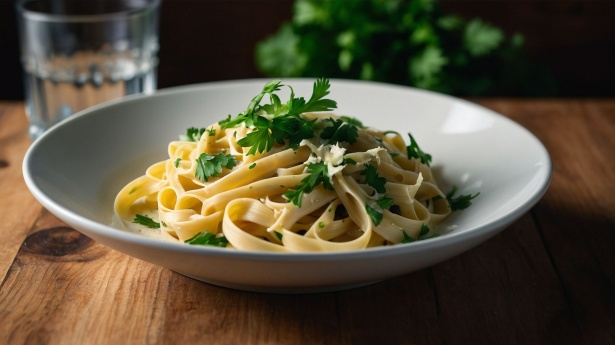

Fettuccine Alfredo

Description
This recipe takes around 15 minutes to prepare and 15 minutes to cook. The ingredients included yields 6 servings.
This recipe is not for the faint hearted. It is the most delicious fettuccine alfredo I have ever tasted so be warned!
Ingredients
- Dry fettuccine pasta (700 g)
- Butter (250 g)
- Heavy cream (350 ml)
- Salt and pepper (to taste)
- Garlic salt (1/8 tsp)
- Grated Romano cheese (75 g)
- Grated Parmesan cheese (50 g)
Steps
- Gather all ingredients
- Bring a large pot of lightly salted water to boil. Add fettuccine pasta and let cook for 8-10 minutes, then drain.
- Melt butter into cream in a large saucepan over low heat. Then add the salt, pepper and garlic salt.
- Increase the heat on the pan to medium. Add the grated Romano and Parmesan cheese and stir until melted and sauce has thickened.
- Add the drained and cooked pasta to sauce pan and toss until thoroughly coated.
- Serve and enjoy!
Home